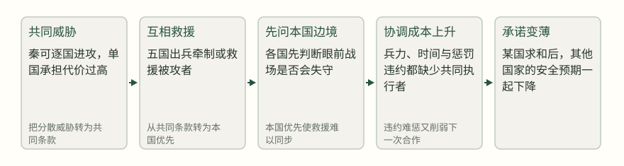
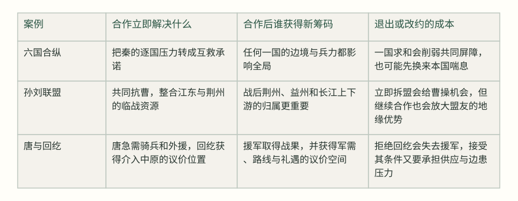
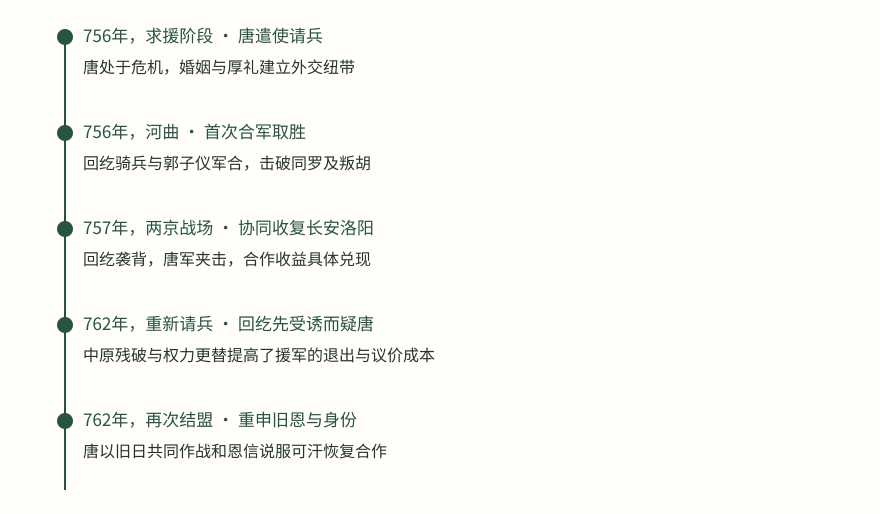

赤壁之后，孙权派人劝刘备先取益州、再取张鲁，声称这样便可统一南方；刘备却回答，同盟若无故相攻，就是把机会交给曹操。两人刚刚共同面对过强敌，为什么连下一步先打哪里都不能一致？因为同一个胜利会给盟友带来不同的安全结果：孙权担心上游，刘备担心自己变成吴方扩张的通道。[1]
这正是“盟友的算盘”要追问的具体困境。共同目标能让多方暂时并肩，却不能替他们决定出力、分利、战后力量变化和退出代价。本篇不把同盟破裂写成性格寓言，也不把每次冲突归结为背信，而是比较六国合纵、孙刘联盟和唐与回纥平叛：合作前各方需要什么，合作中谁承担了不可替代的成本，哪一步使原来的盟友变成未来的约束？
六国合纵：纸面上的共同防御，为什么不能替代彼此的安全感
苏秦游说赵肃侯时，给出的不是一句“大家团结起来”，而是一套看似清楚的分工：秦攻一国，其他五国各出锐师，或牵制秦军，或救援被攻者；谁不履约，五国共同讨伐。这个方案承认秦国会逐个选择较弱的对象，也承认每一国都不愿独自承受秦军压力。它把分散的恐惧转成共同防御条款，因而在苏秦的论证中呈现出对赵肃侯的即时收益。[2] [3]
秦攻一国，五国各出锐师，或桡秦，或救之。有不如约者，五国共伐之！
苏秦说赵肃侯／《通鉴》正文 · [3]
但条款同时埋下了三个难题。第一，什么程度的出兵才算履约？“各出锐师”没有规定兵力、时间和指挥权。第二，救援的收益不对称：被攻国得到直接保护，其他国家要付出军粮、调动和暴露边境的成本。第三，惩罚违约者需要五国继续协调，恰恰把最难完成的协调放在了同盟最需要它的时候。纸面上越像一个总动员命令，执行时越会回到各国自己的安全地图。
张仪对魏襄王的说辞，正是从这张安全地图切入。他没有只说秦国强，而是把魏、赵的行动连成一条次序：秦若攻河外，赵不南，赵不南则魏不北，从约的道路便断绝。魏王面对的不是抽象的“是否忠于合纵”，而是一个很现实的选择：继续把兵力押在远方的共同承诺上，还是先用向秦求和换取眼前的喘息。魏国的地势四平、四面受敌，使它对短期救援的需求比对长期信用的需求更急。[4]
合纵条款如何在执行次序中失去力量


司马光在秦并六国后评论说，三晋是齐、楚的藩蔽，齐、楚又是三晋的根柢；任何一边为了讨好秦而攻击另一边，都是自己撤掉屏障。这个判断指出了合纵的战略互补，却不能反过来证明六国当时已经拥有足够的信任和执行能力。历史结果说明共同利益存在，不说明共同利益足以自动压过每一国的短期约束。[5]
夫三晋者，齐、楚之藩蔽；齐、楚者，三晋之根柢；形势相资，表里相依。
司马光论合纵／《通鉴》正文 · [5]
这组材料的价值正在于它没有要求我们在“合纵正确”与“魏王自私”之间二选一。魏王的退出会让整个体系更脆弱，但魏国面对的战场、补给线和邻国压力也是真实的。若要判断一项联盟承诺能否持续，不能只看共同敌人有多可怕，还要追问：保护谁先发生，谁先付款，谁能监督履约，违约惩罚是否比继续合作更可信。
孙刘联盟：共同敌人让两方靠近，却没有消除战后利益冲突
赤壁前的孙刘合作，起点比六国合纵更急。曹操已经取荆州，刘备南走，孙权必须决定是北面事曹还是凭江东与之抗衡。诸葛亮把选择说得很尖锐：孙权有江东的地势与人心，刘备可以成为援助者而非被吞并的对象；如果不能抗衡，就应该早日投降。鲁肃的方案则更具体：先迎刘备，使他与孙权“共济世业”。这不是无条件的兄弟情义，而是把刘备的人马、声望和荆州位置纳入吴方的防御计算。[6] [7]
孙权接受联盟，首先因为曹操把两方的安全期限压缩到同一时刻。刘备没有稳定根据地，孙权则面对一个已经控制北方和荆州的强敌；谁单独行动，谁都可能被逐个击破。赤壁前，周瑜、程普受命为左右督，“将兵与备并力逆操”；交战时，刘备、周瑜水陆并进，追曹操至南郡。这些记载足以说明孙刘在迎击曹操时形成了共同作战，且确实取得了追击与迫使曹操北还的收益。[8] [9]
赤壁之后的荆州战事，则要另行区分。周瑜、程普与曹仁隔江相拒，甘宁先取夷陵，曹仁围甘宁后，吕蒙建议吴军分兵解围，周瑜采纳并击破曹仁；这是吴军内部的分兵协同，原文没有说刘备军参加这次解围。它能说明局部行动怎样产生收益，不能被倒写成孙刘在赤壁的共同指挥。[10]
可是同盟的成功马上带来新的问题：荆州由谁控制，益州由谁取得，曹操退后谁会成为长江上游的主人？两年后，孙权派使者劝刘备先取益州，再取张鲁，声称如此可以统一南方；刘备拒绝，理由并不只是私人不信任。他指出，曹操不会因为赤壁失利就长期坐守，同盟若“无故自相攻伐”，就是把机会交给敌人；同时，他又以宗室关系和自己对刘璋的名义责任拒绝吴方方案。[1]
而同盟无故自相攻伐，借枢于操，使敌乘其隙，非长计也。
刘备答孙权／《通鉴》正文 · [1]
刘备的回答同时包含合作与防范：他承认曹操仍是共同威胁，却不接受孙权用“共同威胁”推出的全部行动顺序。对孙权而言，益州若被刘备掌握，荆州的吴方安全就可能变差；对刘备而言，若听从孙权先取益州，自己可能从盟友的前线力量变成吴方扩张的通道。两方都能指出共同敌人，却不能因此同意谁先扩张、谁来承担后续风险。
三种同盟中的收益与约束账本


唐与回纥：急迫援军带来胜利，也带来战后重新定价
安史之乱中，唐朝求助回纥，不是因为双方已经建立了无条件的长期信任，而是因为唐军需要迅速获得骑兵和北方力量。肃宗派敦煌王承寀出使，回纥可汗以女妻之，并遣贵臣随承寀和仆固怀恩来见唐肃宗。这个外交安排为求援建立了纽带，也使回纥获得了据此提出条件的议价位置；军队实际到达并参战，则是随后另一段记载。[11]
援军到达后，合作并非象征性的。回纥军与郭子仪在带汗谷会合，击破同罗及叛胡，河曲因而平定；在收复两京的战事中，回纥从南山袭击安庆绪军后背，唐军与之夹击，叛军大败。对唐而言，这种骑兵机动和战场协同确实改变了平叛能力，不能用后来的摩擦抹去当时的实际收益。[12] [13]
回纥至带汗谷，与郭子仪军合；辛酉，与同罗及叛胡战于榆林河北，大破之，斩首三万，捕虏一万，河曲皆平。
《通鉴》正文／唐肃宗至德元载 · [12]
但援军不是脱离利益的礼物。广平王与叶护约为兄弟，唐军每日供应羊、牛和米；出兵越远，回纥就越需要明确的补偿和掠取方式。762年，唐廷再次派使者请求回纥讨史朝义时，回纥已经受到叛军诱说，且军队看到中原州县残破，产生轻唐之志。唐使为稳定局面，需要重申广平王的身份与旧日共同作战的记忆，仆固怀恩也以“唐家恩信不可负”劝说可汗。可汗后来同意助战，显示的是一次重新谈判，而不是旧盟自动延续。[14]
唐廷随后还要面对一个更难的选择：怎样安排回纥的行军路线和军需。药子昂提醒，关中州县屡经兵荒，无力供给回纥；他建议回纥从土门南下，沿叛军控制区取得资财充作军装。可汗没有接受这一方案，另择路线。材料没有把这次分歧写成单一的善恶冲突，却清楚显示双方的收益函数不同：唐朝优先考虑平叛速度与京畿负担，回纥则必须考虑自己的军队如何获得补给。[15] [16]
再看后来回纥使者和唐边镇之间的摩擦，更不能简单说成“唐借兵所以必然反目”。回纥在唐朝获得了介入中原、取得战果并提出军需与礼遇要求的机会；唐朝也在危机中保住了都城和战略主动权。冲突的条件，是合作后的力量关系、供应压力、边镇治理和双方对礼遇的期待发生了变化。共同敌人消失后，原来被压下去的问题重新出现，甚至会被胜利放大。[17]
从求援到再谈判：唐与回纥的合作如何改变条件


同盟真正要管理的，不只是敌人，还有未来的力量变化
三组材料放在一起，能看到一个常被“共同目标”遮住的次序。首先是威胁是否足够急：六国面对的是反复出现的秦军压力，孙刘面对的是曹操顺江而下，唐面对的是都城与王朝存亡；急迫程度决定各方愿意让渡多少自主权。其次是合作的互补是否可替代：回纥骑兵、刘备的荆州力量、六国互相牵制的地理位置，都不是一句誓言可以替代的资源。最后是胜利后谁变得更强：如果合作让盟友获得了直接威胁自己的位置，旧条款就必须重新解释。唐与回鹘后来以“为父除吐蕃”重申亲属式合作，正说明外交语言会随新的共同威胁重新定价，并不等于此前分歧从未存在。[18]
这也解释了为什么“互相拆台”有时是背叛，有时却是对条款边界的争夺。魏王转向秦，确实伤害了合纵的共同防线；但他所面对的近境压力不能被删掉。刘备拒绝先取益州，既保留了自己的发展空间，也避免同盟立即转为孙权单方面扩张；这不等于刘备永远不会与孙权争夺荆州。唐借回纥平叛，既是有效的危机合作，也让回纥在战后拥有更大议价权；这不等于后来每一次边患都由求援本身造成。[5] [1] [14]
读者在面对现实中的多方合作时，可以把“我们目标一致吗”拆成四个更具体的问题：谁先得到保护，谁先承担成本；关键资源由谁控制，是否存在替代来源；合作成功后，谁的力量位置会改变；如果一方暂时退出，另一方能否承受，退出会不会让它更难回来。唐与云南、吐蕃的关系还显示，第三方的猜疑和转向也会改变原有联盟的兵力结构，不能只盯着主盟双方的宣言。[19] 它们不是保证合作成功的公式，而是帮助我们发现条款之外的隐性条件。核查这些条件也有成本：谈得越细，反应越慢；保留退路越多，盟友可能越不信任。
因此，真正稳健的合作不是消灭分歧，而是让分歧在共同敌人尚未消失时有可谈的出口：把出力和补偿写得足够清楚，给战后重新议价留下程序，识别谁会因胜利而变得更危险，并保留不把暂时争议升级为全面决裂的选择。古代国家的战争、婚姻与征服不能直接变成现代关系处方；但它们逼我们看到，盟友不是共同目标的同义词，而是多个有独立退路、独立恐惧和独立未来的行动者。
这里还要补上一层容易被忽略的现实：退出也不是无成本的自由。魏国背约后虽然暂时降低了本国的迫近压力，却让秦更容易逐国施压；刘备若立即接受吴方的益州方案，可能失去独立的战略空间，若拒绝则要承受联盟关系变紧的风险；唐若因供应困难拒绝回纥，可能失去急需的骑兵，若接受则必须承担军粮、路线和战后礼遇的压力。因而“是否拆台”不是道德标签，而是各方在不同时间尺度上选择承受哪一种损失。
共同目标可以让敌人暂时排在第一位，却不能替各方决定胜利之后的第二位敌人是谁。合纵的失败提醒我们，互保条款必须能穿过各国的边境压力；孙刘的合作提醒我们，战场互补不等于战后分配一致；唐与回纥的经历则提醒我们，急迫援军既可能救命，也会改变援军与被援者之间的力量。看清这三层次序，才不会把合作的成功误读成利益已经相同，也不会把后来的冲突倒推成当初合作必然错误。
史料边界
本文使用《资治通鉴》正文的编年记载与司马光评论。人物对盟友动机的部分，是根据其言行、地理位置、资源与后续行动作出的解释；文中已在关键处区分“史书记载”与“作者分析”。回纥合作的战后长期关系涉及更多卷次与制度背景，本文只据所列条目说明合作收益、议价变化和再谈判，不把某一次摩擦扩写为全部关系的单一原因。
来源与证据范围
- 卷67 · 公元215年条 · 本年段落3（正文 · 阅读原文）
而同盟无故自相攻伐，借枢于操，使敌乘其隙，非长计也。
支持：刘备拒绝孙权先取益州，指出同盟内部冲突会给曹操机会。
限制：刘备同时以宗室名义和自身利益回应，动机不能化约为单一原因。 - 卷2 · 公元前333年条 · 本年段落4（正文 · 阅读原文）
六国为一，并力西乡而攻秦，秦必破矣。
支持：苏秦以共同出兵设想说明合纵的即时安全收益。
限制：这是苏秦游说赵肃侯的论证，不等于六国后来实际履约。 - 卷2 · 公元前333年条 · 本年段落4（正文 · 阅读原文）
秦攻一国，五国各出锐师，或桡秦，或救之。有不如约者，五国共伐之！
支持：合纵条款包含互救与惩罚违约的设计。
限制：原文记载的是游说与约定方案，未提供统一执行机构的细节。 - 卷3 · 公元前317年条 · 本年段落3（正文 · 阅读原文）
赵不南则梁不北，梁不北则从道绝，从道绝则大王之国欲毋危不可得也。
支持：张仪用魏、赵的边境次序说明各国本国压力会拆开合纵。
限制：这是张仪劝魏王背约的说辞，内容含有劝说立场。 - 卷7 · 公元前221年条 · 本年段落2（史家评论 · 阅读原文）
三晋者，齐、楚之藩蔽；齐、楚者，三晋之根柢；形势相资，表里相依。
支持：司马光对六国互为屏障的战略评价。
限制：这是秦并六国后的史家评论，不能当作六国当时已共享的判断。 - 卷65 · 公元208年条 · 本年段落29（正文 · 阅读原文）
若备与彼协心，上下齐同，则宜抚安，与结盟好；如有难违，宜别图之，以济大事。
支持：鲁肃提出安抚刘备、结盟共同抗曹，同时保留另图的条件。
限制：此处是鲁肃向孙权提出的策略，不说明刘备已经同意全部条件。 - 卷65 · 公元208年条 · 本年段落31（正文 · 阅读原文）
今将军以托服从之名而内怀犹豫之计，事急而不断，祸至无日矣。
支持：诸葛亮以曹操南下的紧迫性推动孙权在抗曹与投降间决断。
限制：是诸葛亮游说孙权的论述，不能独立证明曹操必然取胜。 - 卷65 · 公元208年条 · 本年段落34（正文 · 阅读原文）
遂以周瑜、程普为左右督，将兵与备并力逆操；
支持：孙权任周瑜、程普为左右督，与刘备合力迎击曹操，支持赤壁前的联合指挥。
限制：记载支持该次迎击的共同作战安排，不足以说明双方后来所有行动都由共同指挥。 - 卷65 · 公元208年条 · 本年段落37（正文 · 阅读原文）
刘备、周瑜水陆并进，追操至南郡。
支持：赤壁交战后刘备与周瑜水陆并进追击曹操至南郡，支持共同作战的实际推进。
限制：此处只能支持追击至南郡的行动与结果，不能概括双方战后利益已经一致。 - 卷65 · 公元208年条 · 本年段落38（正文 · 阅读原文）
留凌公绩于江陵，蒙与君行，解围释急，势亦不久。
支持：赤壁之后吴军内部通过分兵解甘宁之围，显示荆州方向临战协同的实际收益。
限制：局部战事不能代表孙刘联盟全部关系，原文也未记刘备军参加该次解围。 - 卷219 · 公元756年条 · 本年段落12（正文 · 阅读原文）
敦煌王承寀至回纥牙帐，回纥可汗以女妻之，遣其贵臣与承寀及仆固怀恩偕来，见上于彭原。
支持：唐以婚姻与厚礼建立求援的外交纽带，回纥派贵臣随承寀和仆固怀恩来见唐肃宗。
限制：记载表现外交安排，不是军队已出动或长期援军关系固定的证据。 - 卷219 · 公元756年条 · 本年段落17（正文 · 阅读原文）
戊午回纥至带汗谷，与郭子仪军合；辛酉，与同罗及叛胡战于榆林河北，大破之，斩首三万，捕虏一万，河曲皆平。
支持：回纥援军与郭子仪合军并取得战果，说明合作的实际军事收益。
限制：战果记载不等于证明回纥是唯一决定因素。 - 卷220 · 公元757年条 · 本年段落19（正文 · 阅读原文）
回纥自南山袭其背，于黄埃中发十余矢。贼惊顾曰：「回纥至矣！」遂溃。官军与回纥夹击之，贼大败，僵尸蔽野。
支持：收复两京战事中回纥袭背、唐军夹击的具体协同。
限制：这段只支持该场战斗的协同与结果，不能说明整个平叛仅由此决定。 - 卷222 · 公元762年条 · 本年段落52（正文 · 阅读原文）
云「唐室继有大丧，今中原无主，可汗宜速来共收其府库。」可汗信之。
支持：史朝义诱说回纥，唐廷随后通过旧日共同作战与恩信重新争取援军。
限制：诱说内容首先证明史朝义这样说过；回纥态度还受军队所见与补给条件影响。 - 卷222 · 公元762年条 · 本年段落52（正文 · 阅读原文）
关中数遭兵荒，州县萧条，无以供拟，恐可汗失望
支持：药子昂指出关中残破、难以供应回纥军队，说明援军补给是谈判条件。
限制：这是药子昂劝说回纥改变路线时的说法，不能证明所有州县实际供给都已中断。 - 卷222 · 公元762年条 · 本年段落52（正文 · 阅读原文）
请自土门略邢、洺、怀、卫而南，得其资财以充军装。
支持：药子昂提出沿叛军控制区取得资财以充军装的路线方案。
限制：这是唐方提出的路线与补给方案；可汗不从，不能写成实际发生的掠取。 - 卷226 · 公元780年条 · 本年段落29（正文 · 阅读原文）
代宗之世，九姓胡常冒回纥之名，杂居京师，殖货纵暴，与回纥共为公私之患；
支持：多年后，与回纥相关的九姓胡群体在京师和边镇治理中出现摩擦。
限制：九姓胡、回纥使者与回纥国家利益不能合并；此为具体治理事件，不是对求援行为的单线因果判决。 - 卷233 · 公元788年条 · 本年段落21（正文 · 阅读原文）
昔为兄弟，今为子伲，半子也。若吐蕃为患，子当为父除之!
支持：唐与回鹘关系中曾以亲属和共同对吐蕃的承诺重新表述合作。
限制：是回鹘使者来迎公主时的外交辞令，不能直接等同于无条件军事义务。 - 卷233 · 公元788年条 · 本年段落22（正文 · 阅读原文）
吐蕃失云南之助，兵势始羽矣。
支持：韦皋利用云南与吐蕃的猜疑改变联盟结构，说明多方关系会随力量变化重排。
限制：此段是唐与云南、吐蕃关系的另一案例，只用于补充多方力量变化的边界。